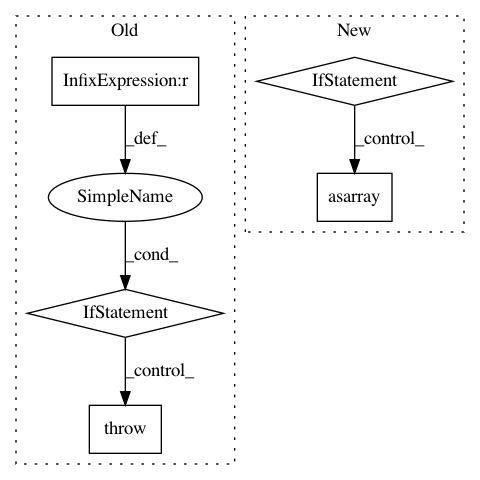

93c5a8952f5a350c78243bc1ffa47b07f5f93721,tensorflow_transform/coders/example_proto_coder.py,_FixedLenFeatureHandler,__init__,#_FixedLenFeatureHandler#Any#Any#,122
Before Change
self._value_fn = _make_feature_value_fn(feature_spec.dtype)
self._shape = feature_spec.shape
self._rank = len(feature_spec.shape)
if self._rank > 0 and self._default_value:
raise ValueError("FixedLenFeature %r got default value for rank > 0, "
"only scalar default values are supported"
% (self._name,))
if isinstance(self._default_value, list):
raise ValueError("FixedLenFeature %r got non-scalar default value, "
"only scalar default values are supported" %
(self._name,))
After Change
for dim in feature_spec.shape:
self._size *= dim
default_value = feature_spec.default_value
if default_value is not None:
np_default_value = np.asarray(default_value)
if list(np_default_value.shape) != self._shape:
raise ValueError(
"FixedLenFeature %r got default value with incorrect shape" %
(self._name,))
default_value = np_default_value.reshape(-1).tolist()
self._default_value = default_value
@property
def name(self):
In pattern: SUPERPATTERN
Frequency: 3
Non-data size: 5
Instances
Project Name: tensorflow/transform
Commit Name: 93c5a8952f5a350c78243bc1ffa47b07f5f93721
Time: 2017-11-22
Author: tf-transform-dev@google.com
File Name: tensorflow_transform/coders/example_proto_coder.py
Class Name: _FixedLenFeatureHandler
Method Name: __init__
Project Name: tensorflow/transform
Commit Name: 51a0c5fbe8e236cdb7e58afce66d7639d8fe9a45
Time: 2017-10-20
Author: tf-transform-dev@google.com
File Name: tensorflow_transform/coders/example_proto_coder.py
Class Name: _FixedLenFeatureHandler
Method Name: __init__
Project Name: MolSSI/QCEngine
Commit Name: a5ee2e0ea284a9b024721536abb94b7998a9e8ee
Time: 2018-11-13
Author: malorian@me.com
File Name: qcengine/programs/torchani.py
Class Name:
Method Name: run_torchani